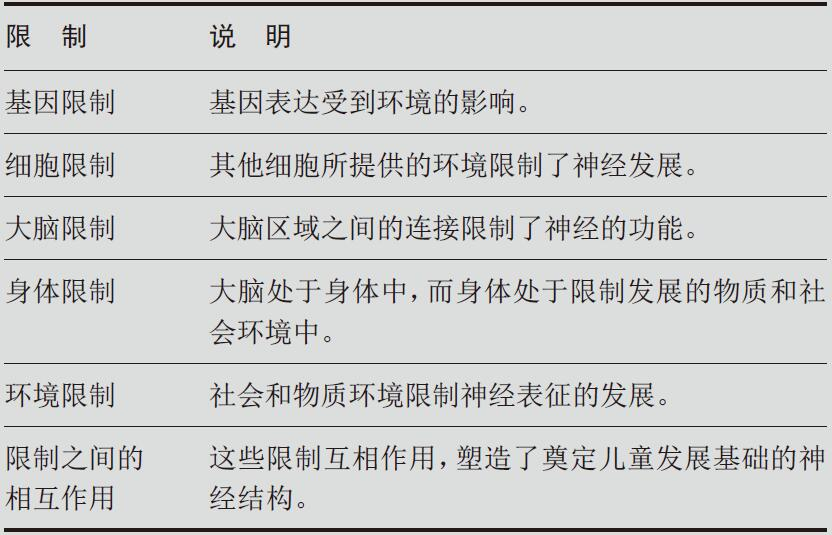

正如之前提到的，从基因和脑成像中得到的新知识正揭示着儿童发展中的多种生理限制。神经建构论意识到，生理会影响儿童的发展，并试图提供一个系统框架来帮助我们理解这是如何发生的。严重的基因影响很容易被发现，例如遗传性耳聋。在这些案例中，很显然要为支持儿童的发展做出调整（例如用手语教学）。但是多数基因的作用很小，很多作用尚未被很好地了解。虽然如此，这些小的作用会影响大脑发展和支撑环境学习的脑细胞系统（通常以它们在大脑中的位置命名，例如“听觉皮层”或“额叶皮层”）的发展。脑细胞（神经）通过电信号来交换信息。这些低压信号通过名为突触的特别节点从一个神经元传递至另一个神经元。
神经建构论将细胞变化对心理发展的作用纳入考虑，例如神经递质（通过对神经突触的作用进而影响我们如何思考和感受的化学物质）的释放。该理论也考虑到了大脑中神经连接的影响，例如大脑中的系统如何直接地相互作用（例如视觉和听觉皮层的细胞网络之间只隔着几个神经突触）和如何远距离地相互作用（例如视觉感知信息要作用于注意力系统，需要跨越更多的突触节点以实现神经传递）。表1展示了神经建构论的主要框架。很明显，表1中的所有生理限制都会影响大脑的发展，进而影响心理表征的发展（认知发展）。与此同时，现在并没有多少研究能够给出各个生理限制如何影响儿童发展的实例。因此，与其寻找生理限制（例如基因表达）如何影响神经结构和神经网络的实例，不如考虑我们总体上所了解的基因和神经功能对儿童发展的影响。
表1 神经建构论中的生理限制
